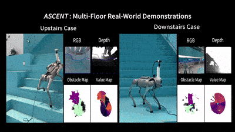
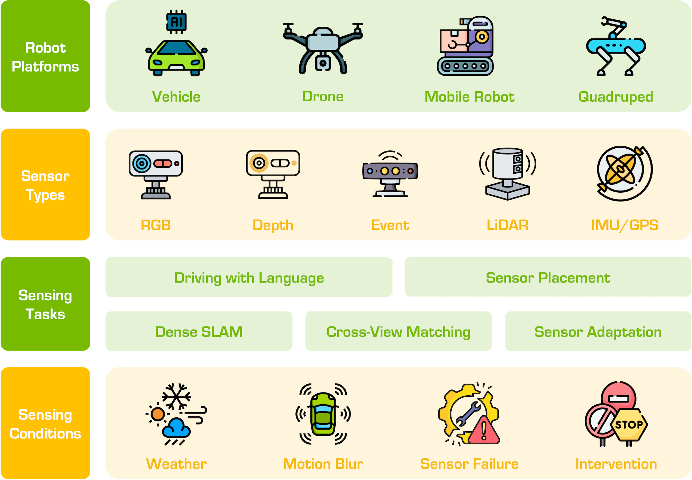
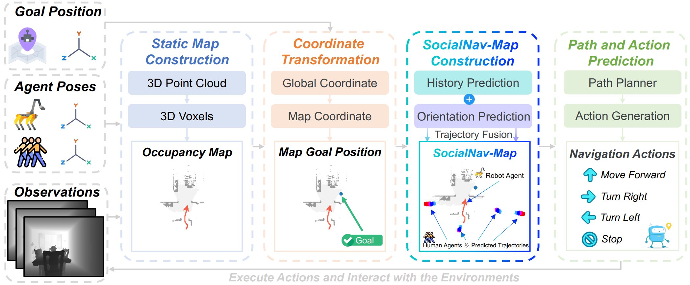
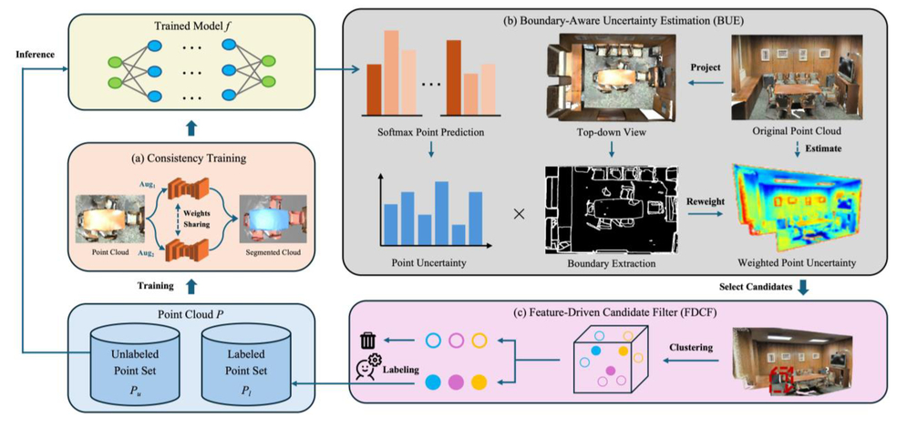

|
Zeying Gong I am a second-year PhD student at Hong Kong University of Science and Technology, Guangzhou, under the primary supervision of Prof. Junwei Liang, and co-supervision of Prof. Yingcong Chen. During my master's studies, I was co-supervised by Prof. Liuqing Yang. Prior to this, I have spent over a year as a 5G network engineer at Huawei. There, I served as one of the technical leaders for the delivery of High-speed Railway 4G & 5G base station project in Jiangxi Province. I earned the bachelor's degree in Electronic Information Science and Technology from Sun Yat-sen University, supervised by Prof. Bin Rao. My research interest is Embodied AI, especially Navigation. I am looking for a research internship. If you have suitable opportunities, please feel free to contact me. |

|
News |
|
| 12/2025 | 🎉 One paper accepted to RAL 2026. [ ASCENT ] [ 视觉语言导航 ] |
|---|---|
| 10/2025 | 🚀 Co-hosted the RoboSense Challenge (Track 2) in IROS 2025. [ Challenge ] [ Track 2 ] |
| 01/2025 | 🎉 One paper accepted to ICRA 2025. [ Falcon ] [ 量子位 ] |
PublicationsMy research seeks to create intelligent navigation systems that enable robots to operate safely and efficiently in human-centric environments. I focus on leveraging the foundations in Vision-Language Models (VLM) and Large Language Models (LLM) to develop robotic generalists in real-world scenarios. The following are my representative papers. |
|
|  |
Stairway to Success: An Online Floor-Aware Zero-Shot Object-Goal Navigation Framework via LLM-Driven Coarse-to-Fine Exploration
Zeying Gong,
Rong Li,
Tianshuai Hu,
Ronghe Qiu,
Lingdong Kong,
Lingfeng Zhang,
Guoyang Zhao,
Yiyi Ding,
Junwei Liang
RAL, 2026
[ Paper ]
[ Home ]
[ Code ]
[ 视觉语言导航 ]
An LLM-driven hierarchical navigation framework that enables robots to navigate multi-floor buildings and find target objects through coarse-to-fine exploration strategy. |

|
From Cognition to Precognition: A Future-Aware Framework for Social Navigation
Zeying Gong,
Tianshuai Hu,
Ronghe Qiu,
Junwei Liang
ICRA, 2025
[ Paper ]
[ Home ]
[ Code ]
[ 量子位 ]
A future-aware social navigation framework that predicts human intentions and proactively plans collision-free paths in crowded environments. |
|  |
The RoboSense Challenge: Sense Anything, Navigate Anywhere, Adapt Across Platforms
Lingdong Kong, Shaoyuan Xie, Zeying Gong, Ye Li, Meng Chu, Ao Liang, Yuhao Dong, Tianshuai Hu, Ronghe Qiu, Rong Li, Hanjiang Hu, Dongyue Lu, Wei Yin, Wenhao Ding, Linfeng Li, Hang Song, Wenwei Zhang, Yuexin Ma, Junwei Liang, et al.
IROS Technical Report, 2025
[ Paper ]
[ Challenge ]
[ Track 2 ]
[ Code ]
A large-scale international robotics challenge focusing on generalizable perception and navigation. Co-organized and hosted Track 2 on social navigation at IROS 2025. |

|
Vision-Language-Action Models for Autonomous Driving: Past, Present, and Future
Tianshuai Hu, Xiaolu Liu, Song Wang, Yiyao Zhu, Ao Liang, Lingdong Kong, Guoyang Zhao, Zeying Gong, Jun Cen, Zhiyu Huang, Xiaoshuai Hao, Linfeng Li, Hang Song, Xiangtai Li, Jun Ma, Shaojie Shen, Jianke Zhu, Dacheng Tao, Ziwei Liu, Junwei Liang
Preprint, 2025
[ Paper ]
[ Home ]
[ Code ]
A comprehensive survey on vision-language-action models for autonomous driving, covering past developments, current state-of-the-art, and future directions. |
|  |
Lingfeng Zhang, Erjia Xiao, Xiaoshuai Hao, Haoxiang Fu, Zeying Gong, Long Chen, Xiaojun Liang, Renjing Xu, Hangjun Ye, Wenbo Ding
Preprint, 2025
[ Paper ]
[ Code ]
A dynamic mapping framework that integrates human trajectory prediction for zero-shot social navigation in crowded environments. |
|  |
BUMP: A Boundary-Aware Active Learning Framework for Point Cloud Semantic Segmentation
Leying Zhang, Yan Liu, Zeying Gong, Zhang Peng
ICDIP, 2025
[ Paper ]
A boundary-aware active learning method that enhances sparse-supervised point cloud semantic segmentation via geometric feature and model uncertainty fusion. |

|
PatchMixer: A Patch-Mixing Architecture for Long-Term Time Series Forecasting
Zeying Gong,
Yujin Tang,
Junwei Liang
IJCAI Workshop, 2024
[ Paper ]
[ Code ]
An efficient CNN framework for long-term time series forecasting that has been widely adopted in the community with over 100 citations. |

|
PostRainBench: A comprehensive benchmark and a new model for precipitation forecasting
Yujin Tang,
Jiaming Zhou,
Xiang Pan,
Zeying Gong,
Junwei Liang
ICLR Workshop, 2024
[ Paper ]
[ Code ]
A comprehensive benchmark and novel model for precipitation forecasting, advancing weather prediction capabilities. |

|
Cluster Unmanned Aerial Vehicle Electromagnetic Calculations and Applications
Zeying Gong,
Bin Rao
CIE, 2021
[ Paper ]
[ Patent ]
Research on electromagnetic calculations for clustered UAV systems with practical applications in unmanned aerial vehicle operations. |
Awards |
|||
| Date | Award | Organization | Note |
| 10/2025 | Fifth Place Award | Shanghai AI Lab | InternUtopia VLN Challenge at IROS 2025 |
| 09/2024 | Postgraduate Studentship for PhD | HKUST(GZ) | CNY 15,000 per month |
| 05/2023 | Outstanding Award | Shandong Information Industry Association | Top 6 in Qilu Weather Algorithm Challenge |
| 02/2023 | Champion | HKUST(GZ) | Campus Squash Tournament |
| 09/2022 | Postgraduate Studentship for MPhil | HKUST(GZ) | CNY 10,000 per month |
| 08/2022 | Outstanding Individual Award | Huawei Jiangxi Office | Top 10 |
| 12/2021 | "Future Star" Award | Huawei | Top 20% |
| 10/2020 | Academic Excellence Award | Sun Yat-sen University | Top 20% |
| 10/2019 | Third Prize | Guangdong Education Department | Top 8% in Electronic Design Competition |